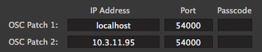
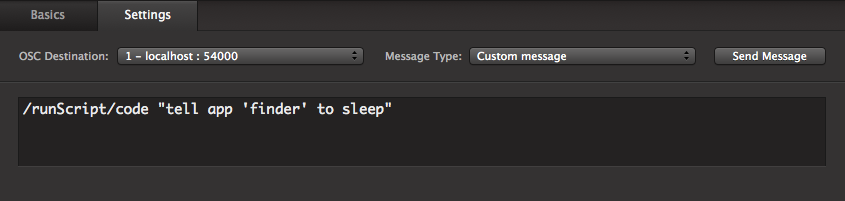

Application to stand along side QLab, receive OSC messages, and call script commands in a separate thread
This project is maintained by Drew Schmidt
This is an application to stand alongside of application written by a QLab evangelist, not by Figure53. It can be used to perform tasks and call scripts that QLab is currently not meant to do. And because it's a separate application, heavier processes will not cause QLab to hang (i.e. A Telnet command to shutter a projector will not cause dropped frames in a video).
If you just want to start you can download the application and an example QLab Workspace here.
But before you start, be sure to read instructions on setup as well as the list of possible commands and protocalls:
Warning: It's possible to create potentially dangerous code. Code carefully. Code responsibly.
OSC Script listens for OSC commands on port 54000. Be sure to start by setting up your OSC patch in QLab with the appropriate IP Address and Port 54000. Use "localhost" if you're running this on the same computer as QLab.

Once you've setup your patch, create OSC cues with a "Custom Message" rather than a "QLab Message".

This command will run a chunk of Apple Script code. It's meant to be used with short snippets. If you need to use quotations, use an apostrophe. If you need nested quotations, consider using the Call Apple Script by Path command
/runScript/code {String}
Example:
/runScript/code "tell app 'finder' to sleep"
Using this command, you can call a pre-written Apple Script that is saved as a *.scpt file. Curious about how to write a script? Use Applications/Utilities/AppleScriptEditor. Then save your code as a "Script" file.
/runScript/path {String}
Example:
/runScript/path "~/Desktop/Go To Sleep.scpt"
Sometimes you'll need to run a command from the OSx Terminal window. You could always use AppleScript to do this, or you can simply run one from here. Be sure to test your commands out in Terminal before creating an OSC message.
/runScript/terminal {String}
Example:
/runScript/terminal "pmset sleepnow"
The application will allow you to send text over a UDP connection. I like to use this to send commands to my ETC Gio lightboard. But there are plenty of options.
/runScript/UDP {String:IPAddress} {Integer:Port} {String:Command}
Example:
/runScript/UDP "10.3.11.243" 7000 "$Channel 404 at 50#"
Use the following commands to craft and send commands via Telnet. You're also given the option to specify extra parameters occasionally needed by Telnet.
Username: Telnet Username [Default is nothing. Don't use this if you don't need this]
Password: Telnet Password [Default is nothing. Don't use this if you don't need this]
Timeout: The Number of seconds before the application will quit trying to open a connection. [Default is 30 seconds]
Delay: The number of seconds between creating a connection and sending a command. Increase this value for a slow network [Default is 0.1 seconds]
Port: The port overwhich Telnet commands are sent [Default is 23]
/runScript/terminal {String:IPAddress} {String:Command}
/runScript/telnet/username {String}
/runScript/telnet/password {String}
/runScript/telnet/timeout {Decimal}
/runScript/telnet/delay {Decimal}
/runScript/telnet/port {Integer}
Example:
/runScript/telnet "10.3.12.66" "~0071 1"
/runScript/telnet/username "Administrator"
/runScript/telnet/password "1234"
/runScript/telnet/timeout 15
/runScript/telnet/delay 0.5
/runScript/telnet/port 23
Remember, this code is provided for you as is. Occasionally we can add elements, features, or try to fix bugs. Please feel free to use the app, use the code, and adapt it for yourself and your own needs.